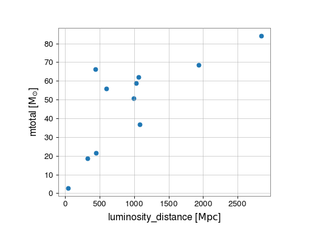

1. Plotting an EventTable in a scatter¶
We can use GWpy’s EventTable to download the catalogue of gravitational-wave
detections, and create a scatter plot to investigate the mass distribution
of events.
First, we can download the 'GWTC-1-confident' catalogue using
EventTable.fetch_open_data():
from gwpy.table import EventTable
events = EventTable.fetch_open_data(
"GWTC-1-confident",
columns=("mass1", "mass2", "E_rad", "distance"),
)
We can now make a scatter plot by specifying the x- and y-axis columns, and (optionally) the colour:
plot = events.scatter("mass1", "mass2", color="E_rad")
plot.colorbar(label="E_rad [{}]".format(r"M$_{\odot}$ c$^{2}$"))
plot.show()
(png)
{kind=link}

We can similarly plot how the total event mass is distributed with
distance. First we have to build the total mass ('mtotal') column
from the component masses:
events.add_column(events["mass1"] + events["mass2"], name="mtotal")
and now can make a new scatter plot:
plot = events.scatter("distance", "mtotal")
plot.show()
(png)
{kind=link}
